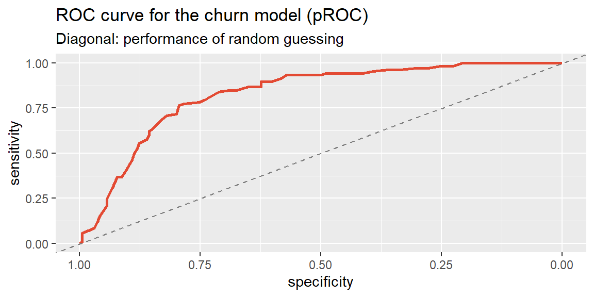

28Week 11: Interpreting and Using Logistic Regression
28.1 Why This Matters
Chapter 27 fit a logistic regression predicting customer churn from tenure and confirmed the coefficient’s sign made sense, longer tenure, lower log-odds of churning. But “log-odds” isn’t a number anyone reports to a manager, and a predicted probability isn’t yet a decision. This section closes both gaps: translating the coefficient into an odds ratio that’s actually interpretable, and turning a predicted probability into an actual classification, along with a way to judge whether that classification is any good.
28.2 From Log-Odds to Odds Ratios
Because the model is linear in log-odds, not in probability, a one-unit increase in \(x\) doesn’t add a fixed amount to the probability, it multiplies the odds by a fixed factor. That factor is the odds ratio, found by exponentiating the coefficient: \[
\text{Odds Ratio} = e^{b_1}
\] - \(\text{OR} > 1\): each one-unit increase in \(x\) is associated with higher odds of the event. - \(\text{OR} < 1\): each one-unit increase in \(x\) is associated with lower odds of the event. - \(\text{OR} = 1\): \(x\) has no association with the odds of the event (\(b_1=0\)).
ExampleExample 11.5: The odds ratio for tenure
Continuing Chapter 27’s churn model (\(b_{\text{tenure}} = -0.0846\)):
The odds ratio for tenure is about 0.919. In plain language: each additional month of tenure is associated with about an 8.1% decrease in the odds of churning (\(1-0.919=0.081\)), holding nothing else in the model constant. The 95% confidence interval for this odds ratio, about \((0.901, 0.937)\), excludes 1, consistent with the coefficient’s significance in Chapter 27, tenure’s protective association with churn is unlikely to be due to chance alone.
ImportantAn odds ratio is not a probability statement
“An 8.1% decrease in odds” is not the same claim as “an 8.1 percentage-point decrease in probability,” and not even the same as “an 8.1% decrease in probability.” Odds and probability move together but aren’t proportional to each other, especially away from \(p=0.5\), so translating an odds ratio into an actual probability requires picking a specific starting point and using the logistic function directly, exactly what Chapter 27’s predict(..., type="response") already did. Report the odds ratio as a statement about odds; report predicted probabilities separately when the audience needs an actual percentage.
28.3 From Probability to a Decision: Choosing a Threshold
A logistic regression’s direct output is a probability between 0 and 1. Turning that into an actual yes/no decision, will we flag this customer as a churn risk, requires choosing a threshold: classify as “positive” (churn) if \(\hat p\) is at or above the threshold, “negative” otherwise. A threshold of 0.5 is the default starting point, but nothing forces that choice, as this section shows shortly.
ExampleExample 11.6: Classifying customers at a 0.5 threshold
customers <- customers |>mutate(pred_prob =predict(model_logit, type ="response"),pred_class =if_else(pred_prob >=0.5, 1, 0))table(Predicted = customers$pred_class, Actual = customers$churned)
Actual
Predicted 0 1
0 165 39
1 29 67
28.4 The Confusion Matrix
The table above is a confusion matrix, cross-tabulating predicted classifications against actual outcomes. Its four cells have standard names:
Actual: No churn
Actual: Churn
Predicted: No churn
True Negative (TN)
False Negative (FN)
Predicted: Churn
False Positive (FP)
True Positive (TP)
From these four counts, several metrics summarize overall performance, two of which are already familiar under different names from Chapter 4’s discussion of screening systems:
Sensitivity (recall): of customers who actually churned, what fraction did the model correctly flag? Exactly the same idea as a detection system’s sensitivity in Chapter 4.
Specificity: of customers who didn’t churn, what fraction did the model correctly leave alone? Same concept as before, now applied to a predictive model instead of a diagnostic test.
Precision: of customers the model flagged as churn risks, what fraction actually churned? This is the classification-model analog of positive predictive value from Chapter 4‘s Bayes’ Rule discussion.
ExampleExample 11.7: Evaluating the churn model at a 0.5 threshold
The model correctly classifies about 77.3% of customers overall. It catches about 63.2% of customers who actually churn (sensitivity) and correctly clears about 85.1% of customers who don’t (specificity); of the customers it flags as churn risks, about 69.8% actually do churn (precision).
NoteAlways compare accuracy to a naive baseline
About 64.7% of customers in this data didn’t churn, so a trivial model that predicts “no churn” for everyone, ignoring tenure entirely, would already be right 64.7% of the time. The fitted model’s 77.3% accuracy is a real improvement over that naive baseline, but this comparison matters generally: with an imbalanced outcome (churn is less common than staying), a high raw accuracy number can be far less impressive than it first sounds, and should always be checked against what guessing the majority class alone would achieve.
28.5 The Threshold Is a Business Choice, Not Just a Default
Lowering the threshold from 0.5 to 0.3 (flagging more customers as churn risks) raises sensitivity from 63.2% to about 84.9%, catching far more of the customers who actually churn, but specificity falls from 85.1% to about 69.1%, and overall accuracy dips slightly, to about 74.7%.
This is the same sensitivity/specificity tradeoff first introduced in Chapter 4, now facing a concrete business decision: raising the threshold reduces false positives (customers wrongly flagged, and perhaps sent an unnecessary, costly retention offer) at the cost of more false negatives (actual churners who slip through unflagged). There’s no universally “correct” threshold; the right choice depends on the relative business cost of each type of mistake. If a retention offer is cheap and losing a customer is expensive, a lower threshold (catch more churners, tolerate more false alarms) is usually worth it; if the offer is costly and most flagged customers wouldn’t have churned anyway, a higher threshold makes more sense.
28.6 A Threshold-Free View: The ROC Curve and AUC
Every metric in the last two examples depends on picking one specific threshold. The ROC (receiver operating characteristic) curve removes that dependence by plotting sensitivity (true positive rate) against \(1-\text{specificity}\) (false positive rate) at every possible threshold at once, tracing out the full range of tradeoffs a threshold choice can produce.
ExampleExample 11.9: The ROC curve for the churn model
The two marked points are exactly the threshold-0.5 and threshold-0.3 classifications from Examples 11.7 and 11.8: lowering the threshold slides up and to the right along the curve, trading a higher true positive rate for a higher false positive rate. The dashed diagonal line represents a model with no real predictive power, randomly guessing would trace that line; the further the curve bows toward the upper-left corner (100% sensitivity, 0% false positives), the better the model separates churners from non-churners at every threshold simultaneously.
The area under the ROC curve (AUC) condenses that entire curve into a single number, answering: if you picked one random customer who churned and one random customer who didn’t, what’s the probability the model assigns a higher predicted probability to the one who actually churned?
ExampleExample 11.10: AUC for the churn model
#computed directly as the area under Example 11.9's ROC curvesum(diff(roc_data$fpr) * (head(roc_data$tpr, -1) +tail(roc_data$tpr, -1)) /2)
[1] 0.8297267
#the same quantity, computed a faster way: how often does a random churner outrank a random non-churner?pos <- customers$pred_prob[customers$churned ==1]neg <- customers$pred_prob[customers$churned ==0]mean(outer(pos, neg, ">")) +0.5*mean(outer(pos, neg, "=="))
[1] 0.8297267
Both approaches agree exactly: an AUC of about 0.83. An AUC of 0.5 means the model is no better than randomly guessing which of the two customers churned (the dashed diagonal in Example 11.9); an AUC of 1.0 means the model perfectly ranks every churner above every non-churner, a ROC curve that reaches the upper-left corner immediately. At 0.83, this model does a good job separating the two groups overall, well above chance, useful context beyond any single threshold’s accuracy, sensitivity, or specificity.
Building the curve and computing the area by hand, as above, is worth doing once so the definitions actually mean something. In practice, the pROC package does both in two lines, and adds a confidence interval around the AUC estimate for free.
ExampleExample 11.11: Automating the ROC curve and AUC with pROC
Call:
roc.default(response = customers$churned, predictor = customers$pred_prob, quiet = TRUE)
Data: customers$pred_prob in 194 controls (customers$churned 0) < 106 cases (customers$churned 1).
Area under the curve: 0.8297
ggroc(roc_obj, color ="#e34a33", linewidth =1) +geom_abline(slope =1, intercept =1, linetype ="dashed", color ="gray50") +labs(title ="ROC curve for the churn model (pROC)",subtitle ="Diagonal: performance of random guessing")

roc() reports the same AUC found by hand, 0.8297, and ggroc() traces the identical curve from Example 11.9 (pROC plots specificity decreasing from 1 to 0 along the x-axis rather than the false positive rate increasing, the standard convention in most ROC software, but the shape and the diagonal reference line mean exactly the same thing). pROC also gives a confidence interval for the AUC itself, since 0.8297 is a statistic computed from one sample of 300 customers and would move around somewhat under a different sample, exactly the reasoning behind every confidence interval since Chapter 13:
ci.auc(roc_obj)
95% CI: 0.7826-0.8768 (DeLong)
The 95% confidence interval, about \((0.783, 0.877)\), is a range for the model’s true discriminating power, not just this one sample’s estimate of it. Because the interval sits well above 0.5 in either direction, there’s strong evidence this model genuinely separates churners from non-churners better than chance, not just in this particular sample of customers.
28.7 Computing Classification Metrics in R and Excel
ExampleExample 11.12: Classification metrics in R and Excel
In R, once predicted probabilities are obtained from predict(..., type = "response"), table() builds the confusion matrix directly, as shown throughout this section.
In Excel, after computing each customer’s predicted probability (via the fitted logistic equation), a helper column applies the threshold:
=IF(predicted_prob_cell >= 0.5, 1, 0)
COUNTIFS() then builds each confusion-matrix cell, for example, true positives:
=COUNTIFS(predicted_range, 1, actual_range, 1)
with accuracy, sensitivity, specificity, and precision computed directly from those four counts using the formulas above.
28.8 Recap
Keyword
Definition
Odds ratio
\(e^{b_1}\); the multiplicative change in odds for a one-unit increase in \(x\).
Classification threshold
The cutoff probability above which an observation is classified “positive”; 0.5 is a common default, not a requirement.
Confusion matrix
A table of predicted vs. actual classifications, broken into true/false positives/negatives.
Accuracy
\((TP+TN)/\text{total}\); overall proportion correctly classified, should be compared against a naive majority-class baseline.
Sensitivity (recall)
\(TP/(TP+FN)\); the fraction of actual positives correctly identified.
Specificity
\(TN/(TN+FP)\); the fraction of actual negatives correctly identified.
Precision
\(TP/(TP+FP)\); the fraction of predicted positives that are actually positive.
ROC curve
A plot of sensitivity vs. \(1-\text{specificity}\) across every possible threshold at once.
AUC
Area under the ROC curve; overall classification performance across all thresholds, from 0.5 (no better than chance) to 1.0 (perfect separation). Computed and plotted automatically with pROC::roc(), auc(), and ggroc().
28.9 Check Your Understanding
NoteProblems
A logistic regression predicting loan default reports an odds ratio of 1.42 for a “missed a payment in the last year” predictor. Interpret this number in a full sentence.
Explain why “the odds ratio is 0.60” cannot be directly restated as “the probability is 40% lower.”
A fraud-detection model’s confusion matrix at a 0.5 threshold is: TP=40, FN=60, FP=200, TN=9,700. Compute accuracy, sensitivity, and precision. Given that only 100 of the 10,000 transactions were actually fraudulent, is accuracy a good headline metric here? Why or why not?
A bank lowers its default-prediction threshold from 0.5 to 0.2. Explain what happens to sensitivity and specificity, and describe a business situation where this tradeoff would be worth making.
Two models have the same accuracy at their default thresholds, but Model A has an AUC of 0.91 and Model B has an AUC of 0.68. What does this difference suggest about the two models, even though their single-threshold accuracy looks the same?
TipSolutions
Holding other predictors in the model constant, a customer who missed a payment in the last year has about 42% higher odds of defaulting than a customer who didn’t (\(1.42-1=0.42\), or 42% higher odds).
Odds and probability are related but not proportional, especially away from \(p=0.5\), so a multiplicative change in odds does not translate into the same percentage (or percentage-point) change in probability. Correctly stating the probability effect requires converting specific starting and ending odds back into probabilities using the logistic function, not just applying the odds ratio directly to a probability.
Accuracy \(= (40+9700)/10000 = 0.974\) (97.4%). Sensitivity \(= 40/(40+60) = 0.40\) (40%). Precision \(= 40/(40+200) = 0.167\) (16.7%). Accuracy is a poor headline metric here: since only 1% of transactions are actually fraudulent, a trivial model that never flags anything would already score 99% accuracy, making this model’s 97.4% look unimpressive by comparison despite catching real fraud, while its low sensitivity (missing 60% of actual fraud) and low precision (most flags are false alarms) are the numbers that actually describe how well it’s doing its job.
Lowering the threshold means more transactions (or customers) get classified as “positive” (predicted default), which raises sensitivity (catching more actual defaulters) but lowers specificity (more non-defaulters get incorrectly flagged too). This tradeoff is worth making when missing a true default is far more costly than the cost of extra scrutiny on a customer who wouldn’t have defaulted, for example, if failing to catch a large default risks a major loss, while a false flag just triggers an extra manual review.
Even with identical accuracy at their default thresholds, Model A’s much higher AUC (0.91 vs. 0.68) indicates it separates the two classes far better across all possible thresholds, not just the one currently being used. This means Model A likely has more room to be tuned toward a better threshold for the specific business tradeoff at hand (e.g., prioritizing sensitivity or precision), while Model B’s low AUC suggests its predicted probabilities carry much weaker overall discriminating power between the two groups, and adjusting its threshold is unlikely to help much.